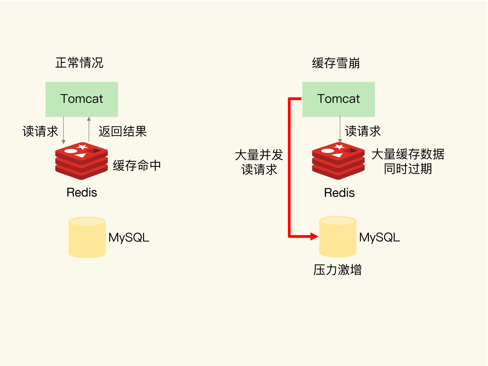
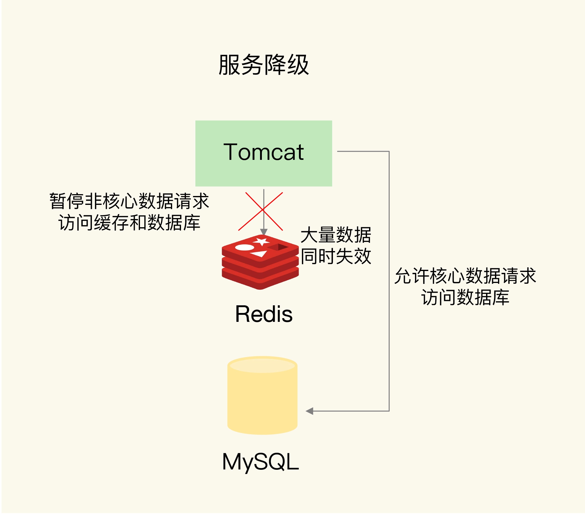
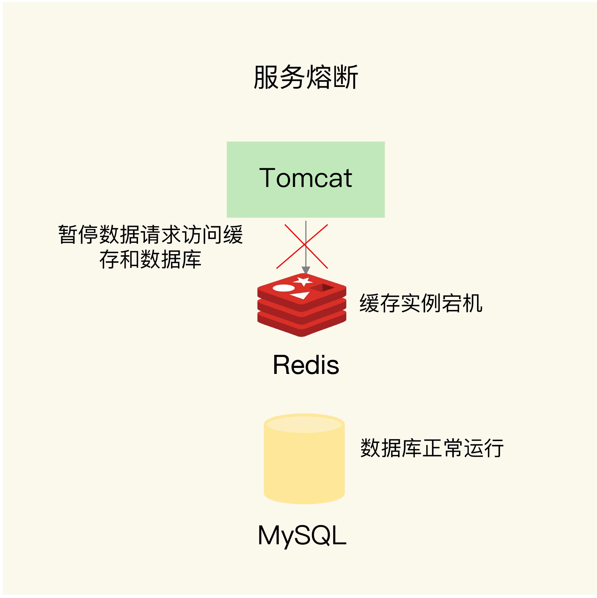
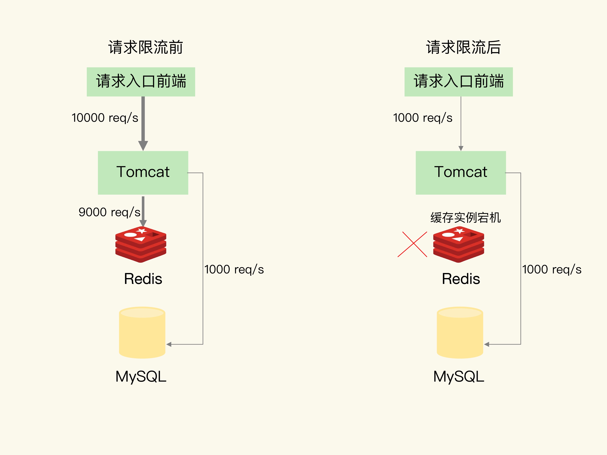
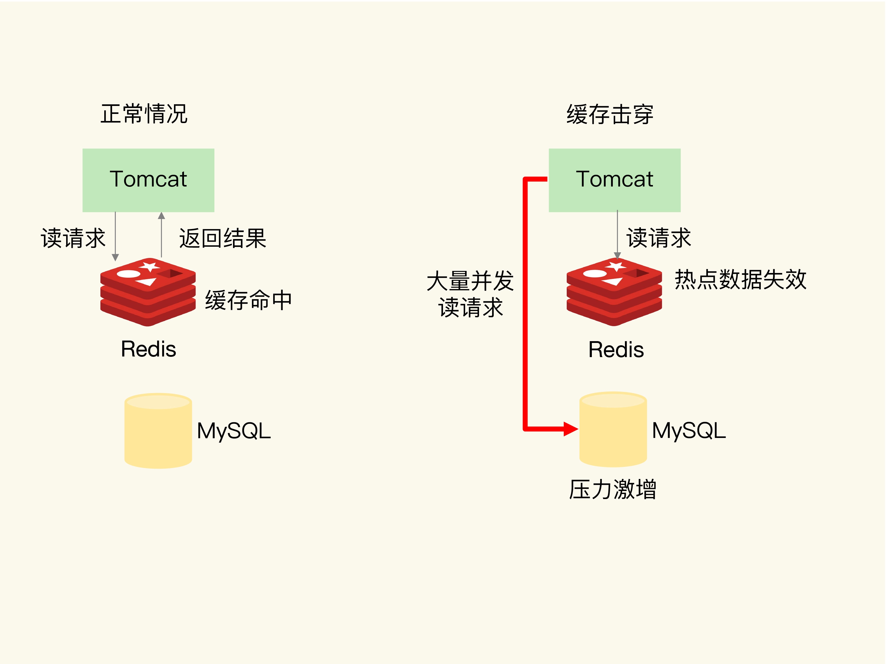
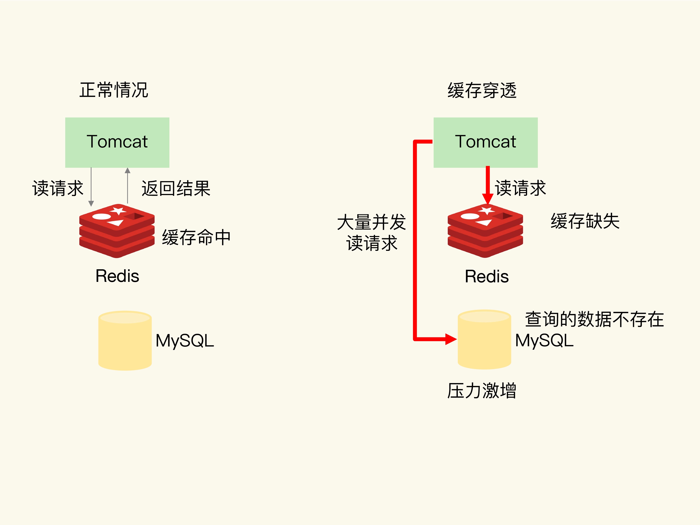
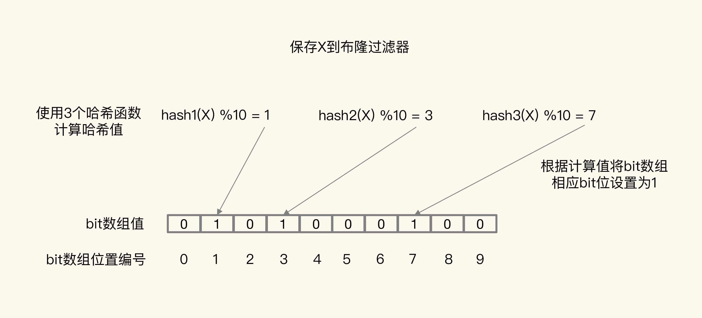

- 00 开篇词 这样学Redis，才能技高一筹.md
- 01 基本架构：一个键值数据库包含什么？.md
- 02 数据结构：快速的Redis有哪些慢操作？.md
- 03 高性能IO模型：为什么单线程Redis能那么快？.md
- 04 AOF日志：宕机了，Redis如何避免数据丢失？.md
- 05 内存快照：宕机后，Redis如何实现快速恢复？.md
- 06 数据同步：主从库如何实现数据一致？.md
- 07 哨兵机制：主库挂了，如何不间断服务？.md
- 08 哨兵集群：哨兵挂了，主从库还能切换吗？.md
- 09 切片集群：数据增多了，是该加内存还是加实例？.md
- 10 第1～9讲课后思考题答案及常见问题答疑.md
- 11 “万金油”的String，为什么不好用了？.md
- 12 有一亿个keys要统计，应该用哪种集合？.md
- 13 GEO是什么？还可以定义新的数据类型吗？.md
- 14 如何在Redis中保存时间序列数据？.md
- 15 消息队列的考验：Redis有哪些解决方案？.md
- 16 异步机制：如何避免单线程模型的阻塞？.md
- 17 为什么CPU结构也会影响Redis的性能？.md
- 18 波动的响应延迟：如何应对变慢的Redis？（上）.md
- 19 波动的响应延迟：如何应对变慢的Redis？（下）.md
- 20 删除数据后，为什么内存占用率还是很高？.md
- 21 缓冲区：一个可能引发“惨案”的地方.md
- 22 第11～21讲课后思考题答案及常见问题答疑.md
- 23 旁路缓存：Redis是如何工作的？.md
- 24 替换策略：缓存满了怎么办？.md
- 25 缓存异常（上）：如何解决缓存和数据库的数据不一致问题？.md
- 26 缓存异常（下）：如何解决缓存雪崩、击穿、穿透难题？.md
- 27 缓存被污染了，该怎么办？.md
- 28 Pika：如何基于SSD实现大容量Redis？.md
- 29 无锁的原子操作：Redis如何应对并发访问？.md
- 30 如何使用Redis实现分布式锁？.md
- 31 事务机制：Redis能实现ACID属性吗？.md
- 32 Redis主从同步与故障切换，有哪些坑？.md
- 33 脑裂：一次奇怪的数据丢失.md
- 34 第23~33讲课后思考题答案及常见问题答疑.md
- 35 Codis VS Redis Cluster：我该选择哪一个集群方案？.md
- 36 Redis支撑秒杀场景的关键技术和实践都有哪些？.md
- 37 数据分布优化：如何应对数据倾斜？.md
- 38 通信开销：限制Redis Cluster规模的关键因素.md
- 39 Redis 6.0的新特性：多线程、客户端缓存与安全.md
- 40 Redis的下一步：基于NVM内存的实践.md
- 41 第35～40讲课后思考题答案及常见问题答疑.md
- 加餐 01 经典的Redis学习资料有哪些？.md
- 加餐 02 用户Kaito：我是如何学习Redis的？.md
- 加餐 03 用户Kaito：我希望成为在压力中成长的人.md
- 加餐 04 Redis客户端如何与服务器端交换命令和数据？.md
- 加餐 05 Redis有哪些好用的运维工具？.md
- 加餐 06 Redis的使用规范小建议.md
- 加餐 07 从微博的Redis实践中，我们可以学到哪些经验？.md
- 结束语 从学习Redis到向Redis学习.md
26 缓存异常（下）：如何解决缓存雪崩、击穿、穿透难题？
上节课，我们学习了缓存和数据库的数据不一致问题和应对方法。除了数据不一致问题，我们常常还会面临缓存异常的三个问题，分别是缓存雪崩、缓存击穿和缓存穿透。这三个问题一旦发生，会导致大量的请求积压到数据库层。如果请求的并发量很大，就会导致数据库宕机或是故障，这就是很严重的生产事故了。
这节课，我就来和你聊聊这三个问题的表现、诱发原因以及解决方法。俗话说，知己知彼，百战不殆。了解了问题的成因，我们就能够在应用 Redis 缓存时，进行合理的缓存设置，以及相应的业务应用前端设置，提前做好准备。
接下来，我们就先看下缓存雪崩的问题和应对方案。
缓存雪崩
缓存雪崩是指大量的应用请求无法在 Redis 缓存中进行处理，紧接着，应用将大量请求发送到数据库层，导致数据库层的压力激增。
缓存雪崩一般是由两个原因导致的，应对方案也有所不同，我们一个个来看。
第一个原因是：缓存中有大量数据同时过期，导致大量请求无法得到处理。
具体来说，当数据保存在缓存中，并且设置了过期时间时，如果在某一个时刻，大量数据同时过期，此时，应用再访问这些数据的话，就会发生缓存缺失。紧接着，应用就会把请求发送给数据库，从数据库中读取数据。如果应用的并发请求量很大，那么数据库的压力也就很大，这会进一步影响到数据库的其他正常业务请求处理。我们来看一个简单的例子，如下图所示：

针对大量数据同时失效带来的缓存雪崩问题，我给你提供两种解决方案。
首先，我们可以避免给大量的数据设置相同的过期时间。如果业务层的确要求有些数据同时失效，你可以在用 EXPIRE 命令给每个数据设置过期时间时，给这些数据的过期时间增加一个较小的随机数（例如，随机增加 1~3 分钟），这样一来，不同数据的过期时间有所差别，但差别又不会太大，既避免了大量数据同时过期，同时也保证了这些数据基本在相近的时间失效，仍然能满足业务需求。
除了微调过期时间，我们还可以通过服务降级，来应对缓存雪崩。
所谓的服务降级，是指发生缓存雪崩时，针对不同的数据采取不同的处理方式。
- 当业务应用访问的是非核心数据（例如电商商品属性）时，暂时停止从缓存中查询这些数据，而是直接返回预定义信息、空值或是错误信息；
- 当业务应用访问的是核心数据（例如电商商品库存）时，仍然允许查询缓存，如果缓存缺失，也可以继续通过数据库读取。
这样一来，只有部分过期数据的请求会发送到数据库，数据库的压力就没有那么大了。下面这张图显示的是服务降级时数据请求的执行情况，你可以看下。

**除了大量数据同时失效会导致缓存雪崩，还有一种情况也会发生缓存雪崩，那就是，无法处理请求，这就会导致大量请求一下子积压到数据库层，从而发生缓存雪崩。**Redis 缓存实例发生故障宕机了，
一般来说，一个 Redis 实例可以支持数万级别的请求处理吞吐量，而单个数据库可能只能支持数千级别的请求处理吞吐量，它们两个的处理能力可能相差了近十倍。由于缓存雪崩，Redis 缓存失效，所以，数据库就可能要承受近十倍的请求压力，从而因为压力过大而崩溃。
此时，因为 Redis 实例发生了宕机，我们需要通过其他方法来应对缓存雪崩了。我给你提供两个建议。
第一个建议，是在业务系统中实现服务熔断或请求限流机制。
所谓的服务熔断，是指在发生缓存雪崩时，为了防止引发连锁的数据库雪崩，甚至是整个系统的崩溃，我们暂停业务应用对缓存系统的接口访问。再具体点说，就是业务应用调用缓存接口时，缓存客户端并不把请求发给 Redis 缓存实例，而是直接返回，等到 Redis 缓存实例重新恢复服务后，再允许应用请求发送到缓存系统。
这样一来，我们就避免了大量请求因缓存缺失，而积压到数据库系统，保证了数据库系统的正常运行。
在业务系统运行时，我们可以监测 Redis 缓存所在机器和数据库所在机器的负载指标，例如每秒请求数、CPU 利用率、内存利用率等。如果我们发现 Redis 缓存实例宕机了，而数据库所在机器的负载压力突然增加（例如每秒请求数激增），此时，就发生缓存雪崩了。大量请求被发送到数据库进行处理。我们可以启动服务熔断机制，暂停业务应用对缓存服务的访问，从而降低对数据库的访问压力，如下图所示：

服务熔断虽然可以保证数据库的正常运行，但是暂停了整个缓存系统的访问，对业务应用的影响范围大。为了尽可能减少这种影响，我们也可以进行请求限流。这里说的请求限流，就是指，我们在业务系统的请求入口前端控制每秒进入系统的请求数，避免过多的请求被发送到数据库。
我给你举个例子。假设业务系统正常运行时，请求入口前端允许每秒进入系统的请求是 1 万个，其中，9000 个请求都能在缓存系统中进行处理，只有 1000 个请求会被应用发送到数据库进行处理。
一旦发生了缓存雪崩，数据库的每秒请求数突然增加到每秒 1 万个，此时，我们就可以启动请求限流机制，在请求入口前端只允许每秒进入系统的请求数为 1000 个，再多的请求就会在入口前端被直接拒绝服务。所以，使用了请求限流，就可以避免大量并发请求压力传递到数据库层。

使用服务熔断或是请求限流机制，来应对 Redis 实例宕机导致的缓存雪崩问题，是属于“事后诸葛亮”，也就是已经发生缓存雪崩了，我们使用这两个机制，来降低雪崩对数据库和整个业务系统的影响。
我给你的第二个建议就是事前预防。
通过主从节点的方式构建 Redis 缓存高可靠集群。如果 Redis 缓存的主节点故障宕机了，从节点还可以切换成为主节点，继续提供缓存服务，避免了由于缓存实例宕机而导致的缓存雪崩问题。
缓存雪崩是发生在大量数据同时失效的场景下，而接下来我要向你介绍的缓存击穿，是发生在某个热点数据失效的场景下。和缓存雪崩相比，缓存击穿失效的数据数量要小很多，应对方法也不一样，我们来看下。
缓存击穿
缓存击穿是指，针对某个访问非常频繁的热点数据的请求，无法在缓存中进行处理，紧接着，访问该数据的大量请求，一下子都发送到了后端数据库，导致了数据库压力激增，会影响数据库处理其他请求。缓存击穿的情况，经常发生在热点数据过期失效时，如下图所示：

为了避免缓存击穿给数据库带来的激增压力，我们的解决方法也比较直接，对于访问特别频繁的热点数据，我们就不设置过期时间了。这样一来，对热点数据的访问请求，都可以在缓存中进行处理，而 Redis 数万级别的高吞吐量可以很好地应对大量的并发请求访问。
好了，到这里，你了解了缓存雪崩和缓存击穿问题，以及它们的应对方案。当发生缓存雪崩或击穿时，数据库中还是保存了应用要访问的数据。接下来，我向你介绍的缓存穿透问题，和雪崩、击穿问题不一样，缓存穿透发生时，数据也不在数据库中，这会同时给缓存和数据库带来访问压力，那该怎么办呢？我们来具体看下。
缓存穿透
缓存穿透是指要访问的数据既不在 Redis 缓存中，也不在数据库中，导致请求在访问缓存时，发生缓存缺失，再去访问数据库时，发现数据库中也没有要访问的数据。此时，应用也无法从数据库中读取数据再写入缓存，来服务后续请求，这样一来，缓存也就成了“摆设”，如果应用持续有大量请求访问数据，就会同时给缓存和数据库带来巨大压力，如下图所示：

那么，缓存穿透会发生在什么时候呢？一般来说，有两种情况。
- 业务层误操作：缓存中的数据和数据库中的数据被误删除了，所以缓存和数据库中都没有数据；
- 恶意攻击：专门访问数据库中没有的数据。
为了避免缓存穿透的影响，我来给你提供三种应对方案。
第一种方案是，缓存空值或缺省值。
一旦发生缓存穿透，我们就可以针对查询的数据，在 Redis 中缓存一个空值或是和业务层协商确定的缺省值（例如，库存的缺省值可以设为 0）。紧接着，应用发送的后续请求再进行查询时，就可以直接从 Redis 中读取空值或缺省值，返回给业务应用了，避免了把大量请求发送给数据库处理，保持了数据库的正常运行。
第二种方案是，使用布隆过滤器快速判断数据是否存在，避免从数据库中查询数据是否存在，减轻数据库压力。
我们先来看下，布隆过滤器是如何工作的。
布隆过滤器由一个初值都为 0 的 bit 数组和 N 个哈希函数组成，可以用来快速判断某个数据是否存在。当我们想标记某个数据存在时（例如，数据已被写入数据库），布隆过滤器会通过三个操作完成标记：
- 首先，使用 N 个哈希函数，分别计算这个数据的哈希值，得到 N 个哈希值。
- 然后，我们把这 N 个哈希值对 bit 数组的长度取模，得到每个哈希值在数组中的对应位置。
- 最后，我们把对应位置的 bit 位设置为 1，这就完成了在布隆过滤器中标记数据的操作。
如果数据不存在（例如，数据库里没有写入数据），我们也就没有用布隆过滤器标记过数据，那么，bit 数组对应 bit 位的值仍然为 0。
当需要查询某个数据时，我们就执行刚刚说的计算过程，先得到这个数据在 bit 数组中对应的 N 个位置。紧接着，我们查看 bit 数组中这 N 个位置上的 bit 值。只要这 N 个 bit 值有一个不为 1，这就表明布隆过滤器没有对该数据做过标记，所以，查询的数据一定没有在数据库中保存。为了便于你理解，我画了一张图，你可以看下。

图中布隆过滤器是一个包含 10 个 bit 位的数组，使用了 3 个哈希函数，当在布隆过滤器中标记数据 X 时，X 会被计算 3 次哈希值，并对 10 取模，取模结果分别是 1、3、7。所以，bit 数组的第 1、3、7 位被设置为 1。当应用想要查询 X 时，只要查看数组的第 1、3、7 位是否为 1，只要有一个为 0，那么，X 就肯定不在数据库中。
正是基于布隆过滤器的快速检测特性，我们可以在把数据写入数据库时，使用布隆过滤器做个标记。当缓存缺失后，应用查询数据库时，可以通过查询布隆过滤器快速判断数据是否存在。如果不存在，就不用再去数据库中查询了。这样一来，即使发生缓存穿透了，大量请求只会查询 Redis 和布隆过滤器，而不会积压到数据库，也就不会影响数据库的正常运行。布隆过滤器可以使用 Redis 实现，本身就能承担较大的并发访问压力。
最后一种方案是，在请求入口的**前端进行请求检测。**缓存穿透的一个原因是有大量的恶意请求访问不存在的数据，所以，一个有效的应对方案是在请求入口前端，对业务系统接收到的请求进行合法性检测，把恶意的请求（例如请求参数不合理、请求参数是非法值、请求字段不存在）直接过滤掉，不让它们访问后端缓存和数据库。这样一来，也就不会出现缓存穿透问题了。
跟缓存雪崩、缓存击穿这两类问题相比，缓存穿透的影响更大一些，希望你能重点关注一下。从预防的角度来说，我们需要避免误删除数据库和缓存中的数据；从应对角度来说，我们可以在业务系统中使用缓存空值或缺省值、使用布隆过滤器，以及进行恶意请求检测等方法。
小结
这节课，我们学习了缓存雪崩、击穿和穿透这三类异常问题。从问题成因来看，缓存雪崩和击穿主要是因为数据不在缓存中了，而缓存穿透则是因为数据既不在缓存中，也不在数据库中。所以，缓存雪崩或击穿时，一旦数据库中的数据被再次写入到缓存后，应用又可以在缓存中快速访问数据了，数据库的压力也会相应地降低下来，而缓存穿透发生时，Redis 缓存和数据库会同时持续承受请求压力。
为了方便你掌握，我把这三大问题的原因和应对方案总结到了一张表格，你可以再复习一下。

最后，我想强调一下，服务熔断、服务降级、请求限流这些方法都是属于“有损”方案，在保证数据库和整体系统稳定的同时，会对业务应用带来负面影响。例如使用服务降级时，有部分数据的请求就只能得到错误返回信息，无法正常处理。如果使用了服务熔断，那么，整个缓存系统的服务都被暂停了，影响的业务范围更大。而使用了请求限流机制后，整个业务系统的吞吐率会降低，能并发处理的用户请求会减少，会影响到用户体验。
所以，我给你的建议是，尽量使用预防式方案：
- 针对缓存雪崩，合理地设置数据过期时间，以及搭建高可靠缓存集群；
- 针对缓存击穿，在缓存访问非常频繁的热点数据时，不要设置过期时间；
- 针对缓存穿透，提前在入口前端实现恶意请求检测，或者规范数据库的数据删除操作，避免误删除。
每课一问
按照惯例，我给你提个小问题。在讲到缓存雪崩时，我提到，可以采用服务熔断、服务降级、请求限流的方法来应对。请你思考下，这三个机制可以用来应对缓存穿透问题吗？
欢迎在留言区写下你的思考和答案，我们一起交流讨论。如果你觉得今天的内容对你有所帮助，也欢迎你分享给你的朋友或同事。我们下节课见。
© 2019 - 2023 Liangliang Lee. Powered by Vert.x and hexo-theme-book.